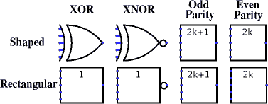

|
| Portas XOR/XNOR/Paridade Ímpar/Paridade Par |
| Biblioteca: | Base |
| Introdução: | 2.0 Beta 1 para XOR/Paridade Ímpar/Par; 2.0 Beta 6 para XNOR |
| Aparência: |  |
Portas XOR/XNOR/Paridade Ímpar/Paridade Par servem para calcular as respectivas funções das entradas, e emitir o resultado à saída.
Por padrão, todos as entradas que não estiverem conectadas serão consideradas
desligadas e, portanto, ignoradas - isso é, se a entrada realmente não tiver algo
ligado a ela, nem mesmo um fio.
Dessa forma, você poderá inserir um porta com 5 entradas, mas se conectar somente
duas entradas, ele irá funcionar como uma porta de 2 entradas; isso irá aliviá-lo do
trabalho de ter de se preocupar com a configuração do número de entradas cada vez
que você criar uma porta.
(Se todas as entradas estiverem desconectadas, a saída será o valor de erro X.)
Alguns usuários, no entanto, preferem que o Logisim insista que todas as entradas
devam estar ligado, pois isso corresponde melhor às portas do mundo real.
Você poderá permitir esse comportamento, se usar em Projeto > Opções ...
na guia Simulação, o item de menu Erro para entradas indefinidas
para
Saída de Porta Quando Indefinida.
A tabela-verdade para portas com duas entradas é a que se segue.
| x | y | XOR | XNOR | Odd | Even |
|---|---|---|---|---|---|
| 0 | 0 | 0 | 1 | 0 | 1 |
| 0 | 1 | 1 | 0 | 1 | 0 |
| 1 | 0 | 1 | 0 | 1 | 0 |
| 1 | 1 | 0 | 1 | 0 | 1 |
Como você pode ver, a porta Paridade Ímpar e o porta XOR se comportam de forma idêntica com duas entradas, da mesma forma, o fazem as portas Paridade Par e XNOR. Mas, se houver mais de duas entradas especificadas, a porta XOR emitirá 1 apenas quando houver exatamente uma entrada igual a 1, enquanto a porta Paridade Ímpar irá emitir 1 apenas se houver um número ímpar de entradas iguais a 1. O porta XNOR irá emitir 1 só quando não houver exatamente uma entrada igual a 1, enquanto a porta Paridade Par irá emitir 1 se houver uma quantidade par de entradas iguais a 1. As portas XOR e XNOR incluem um atributo chamado Comportamento para Entradas Múltiplas que lhes permite serem configuradas para usar o comportamento das portas Paridade Ímpar e até mesmo o da Paridade Par.
Se alguma entrada for um valor de erro (por exemplo, se os valores estiverem entrando em conflito em uma mesma conexão) ou flutuante, a saída também o será.
As versões multibit de cada porta executarão a mesma operação descrita acima bit a bit sobre suas entradas.
Nota: Muitas autoridades alegam que a porta XOR convencional deve ter comportamento equivalente ao da Paridade Ímpar, mas não há não um acordo sobre isso. O comportamento padrão do Logisim para as portas XOR é baseado no padrão IEEE 91. É também coerente significado intuitivo subjacente ao termo ou exclusivo : um garçom perguntando se você quer um prato de purê de batatas, cenouras, ervilhas, ou couve-flor só aceitará uma escolha, e não três, independentemente do que algumas autoridades possam dizer. (Devo admitir, porém, que eu não sujeitei essa declaração a um teste rigoroso.) Você poderá configurar as portas XOR e XNOR para usar a paridade, alterando o seu atributo aoComportamento para Entradas Múltiplas.
As entradas para o componente. Haverá tantos delas quanto o especificado pelo atributo Número de Entradas.
Observar que se você estiver usando portas convencionais, o lado oeste das portas XOR e XNOR será curvo. No entanto, os pinos de entrada estarão sobre uma linha. O Logisim irá traçar marcas curtas para indicar essas entradas; se você ultrapassar essas indicações, ele irá supor que a intenção seria apenas atingi-los. Em "Prévia da Impressão", essas marcas não serão desenhadas a menos que estejam conectados a fios.
A porta de saída, cujo valor será calculado com base nos valores atuais das entradas conforme descrito acima.
Quando o componente for selecionado ou estiver sendo acrescentado,
os dígitos de '0 'a '9' poderão alterar o atributo Número de Entradas
,
Alt-0 até ALT-9 irão alterar o seu atributo Bits de Dados
,
e as teclas com setas poderão alterar o seu atributo Direção
.
"asas"para acomodar as entradas adicionais além daquelas normalmente oferecidas.
Nenhum.
Permite que o rótulo associado à porta seja editado.